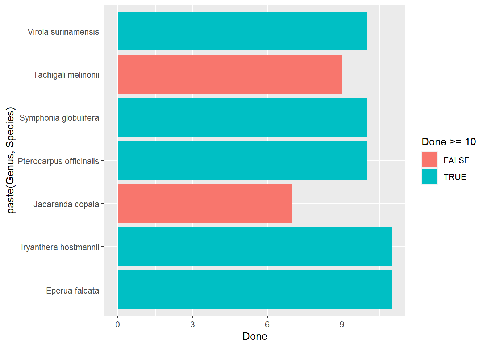

This book is in Open Review. I want your feedback to make the book better for you and other readers. To add your annotation, select some text and then click the on the pop-up menu. To see the annotations of others, click the in the upper right hand corner of the page
Chapter 1 Species
We selected 7 species, chosen according to their abundance in SFF and according to in natura availability during the wet season of 2021 (January-July 2021). To explore the variability of mechanistic traits linked to drought tolerance and root fungal community, we plan to measure in natura 10 seedlings per species known to be strictly affiliated to SFF or not.
## Warning: package 'readxl' was built under R version 4.0.5## Warning: package 'kableExtra' was built under R version 4.0.5## Warning: package 'ggplot2' was built under R version 4.0.5| Family | Genus | Species | Done | Left | Goal |
|---|---|---|---|---|---|
| Fabaceae | Eperua | falcata | 11 | 0 | 10 |
| Myristicaceae | Iryanthera | hostmannii | 11 | 0 | 10 |
| Fabaceae | Jacaranda | copaia | 7 | 3 | 10 |
| Fabaceae | Pterocarpus | officinalis | 10 | 0 | 10 |
| Clusiaceae | Symphonia | globulifera | 10 | 0 | 10 |
| Fabaceae | Tachigali | melinonii | 9 | 1 | 10 |
| Myristicaceae | Virola | surinamensis | 10 | 0 | 10 |
ggplot(Sampling, aes(paste(Genus, Species), Done, fill = Done >= 10)) +
geom_col() +
coord_flip() +
geom_hline(yintercept = 10, linetype = 2, col = "lightgrey")